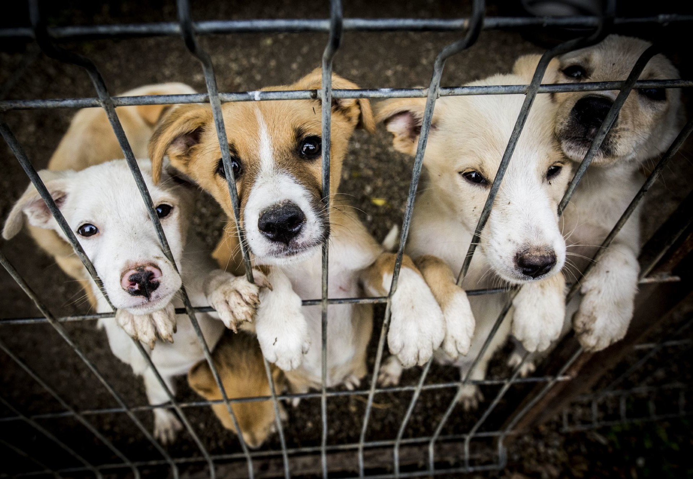
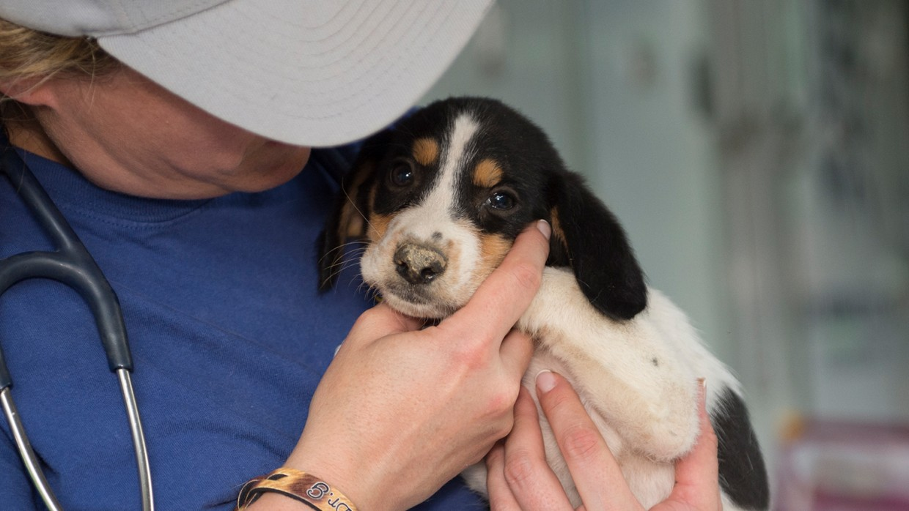

ABOUT US

Founded in 2009 we are Springfield’s only no-kill animal shelter. Since it’s opening Pets to Go has placed an estimated 18,000 homeless cats and dogs in new households.
Where do these animals come from? 40% are owner surrenders and the other 60% are animals we rescue from shelters that euthanize. We have a dedicated staff of 15 (half are part-time). And our 200-plus volunteers are our backbone (thank you volunteers and donors!).
Many of the rescued animals who come to Pets to Go get more love and attention in our shelter than they’ve ever known before. Our shelter continues to grow and improve. Drop by and get to know us better!
ANIMAL RESCUE

Our animals come from overcrowded area shelters, local families that can no longer care for their dog or cat, and rescue groups throughout the state. We give homeless, abandoned, and sometimes abused animals a second chance at a healthy, happy life with a caring guardian.
REHABILITATION
Pets To Go retrains animals with behavioral problems to be better companions in their new homes. And after the adoption, we’re here to help with behavior consultations, training classes, and more.
SPAY/NEUTER CLINIC
Spaying or neutering your pet is the best way to stop the flood of homeless animals in Springfield. Our modern spay and neuter clinic has a top-notch professional team.